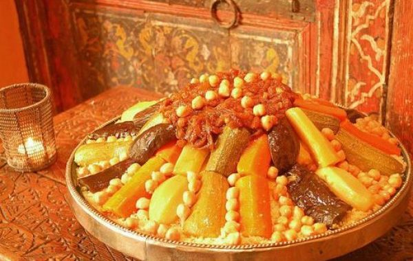

CouscouS

Description
Couscous – sometimes called kusksi or kseksu – is a traditional North African dish of small steamed granules
of rolled semolina that is often served with a stew spooned on top.
Pearl millet, sorghum, bulgur, and other cereals are sometimes cooked
in a similar way in other regions, and the resulting dishes are also sometimes called couscous.
Ingredients
- 1 kg couscous - (not instant; I prefer medium caliber)
- 55 ml olive oil or vegetable oil
- 1 kg lamb, beef, or goat meat, large pieces on the bone - (or 1 large whole chicken)
- 1 large onion, coarsely chopped
- 3 fresh tomatoes, peeled and coarsely chopped
- 100 g dried chickpeas, soaked overnight
- 1 small head of cabbage, cut in half or quartered
- 3 or 4 medium turnips, peeled and cut in half
- 8 to 10 carrots, peeled - (cut in half lengthwise if large)
- 4 or 5 small zucchini, ends trimmed - (or 8-ball round, cut in half)
Instructions
- Brown the meat or chicken with the oil, onion, tomatoes and spices in the base of a couscoussier over medium-high heat.
- Add the soaked, drained chickpeas along with the parsley/cilantro bouquet and about 3 quarts (or liters) of water.
- Drizzle 1/4 cup of oil over the couscous. Toss and roll the couscous around between your hands for a minute to distribute the oil evenly and break up any balls or clumps.
- Transfer the couscous to a lightly oiled steamer basket, taking care not to compress the grains in the process
- Turn the couscous back into your gsaa or bowl. Allow it to cool briefly, then work in 1 cup of water, using the same tossing and turning as you did before.
- Add the salt in the same manner, then add in another 1 cup of water.
- Add the cabbage, onions, tomatoes (and fava beans, if using) to the couscous pot, then place the couscous basket on the couscoussier.
- Turn the steamed couscous out into your gssaa or bowl.
- Add the remaining vegetables to the pot--the squash or pumpkin, the zucchini and the sweet potatoes if using.
- Place the couscous basket back on the pot and cook until steam begins to emerge from the couscous.
Return to home